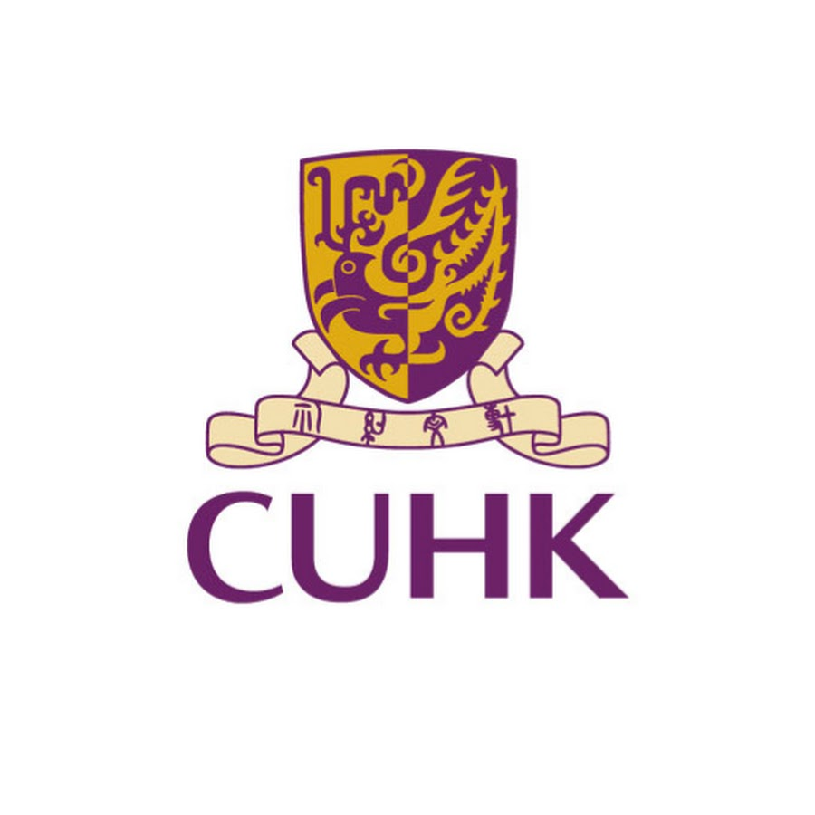
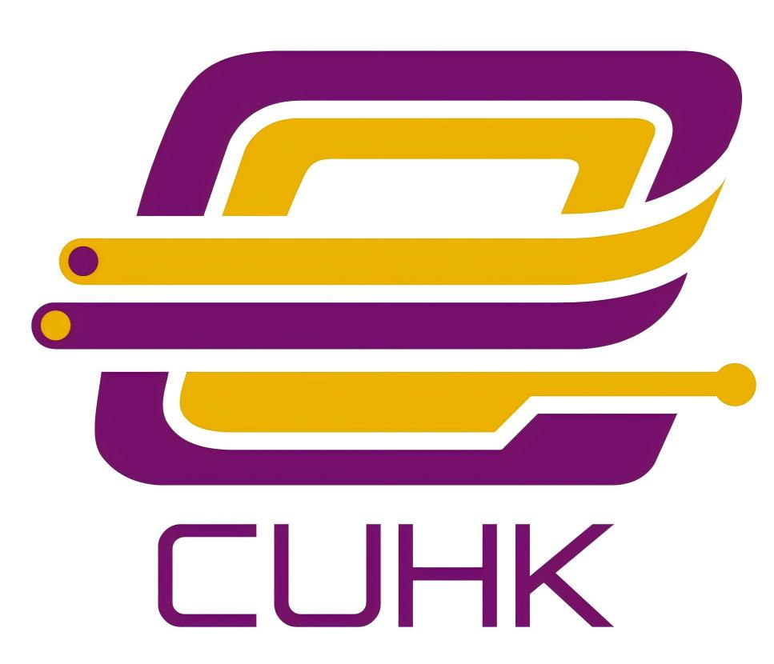
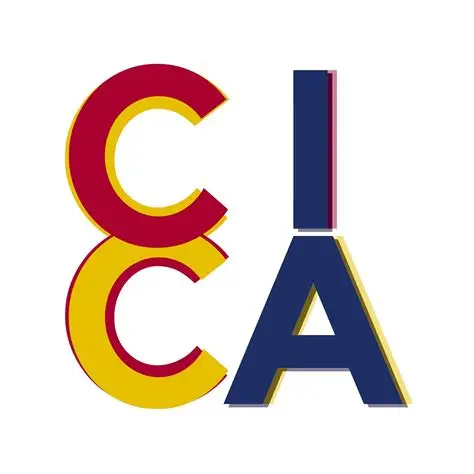

EICARL: Traversability-Aware Decision Making Through Bounded Attempts in Narrow-Lumen Navigation
CoRL 2026 Workshop · Oops, I Erred: Collecting, Curating and Using Imperfect Data for Realistic Scenarios ↗
I am Tianchun (Evan) Wu, an Electronic Engineering undergraduate at The Chinese University of Hong Kong. My research lies at the intersection of embodied AI, medical robotics, and robot learning, with a particular focus on intelligent robotic endoscopy.
At the Robotics, Perception and Artificial Intelligence Laboratory (RPAI Lab), I work on learning-based robotic systems that integrate multimodal perception, language reasoning, and physical control. I currently lead and contribute to research projects spanning autonomous endoscopic navigation, vision-language-action learning, and intelligent endoscopic intervention.
My recent research has increasingly focused on self-evolving embodied intelligence: enabling robotic systems to acquire, evaluate, and improve task skills through interaction and experience rather than remaining limited to a fixed policy or a single predefined task.
My long-term research goal is to develop generalizable and adaptive robotic intelligence for real-world medical environments, particularly systems that can continuously improve while operating safely alongside clinicians. I plan to continue toward research-based postgraduate study in robotics and embodied intelligence.

The Chinese University of Hong Kong
Bachelor of Engineering in Electronic Engineering, ELITE Stream
Selected coursework: Data Structures, C Programming, Digital Circuits, and Electronic System Design
August 2024 – June 2027

Robotics, Perception and Artificial Intelligence Laboratory
Research Student Helper
Supervisor: Mr. Chi Kit Ng
December 2025 – Present
Work on embodied AI and learning-based medical robotics, with a focus on autonomous and semi-autonomous robotic endoscopy.
CoRL 2026 Workshop · Oops, I Erred: Collecting, Curating and Using Imperfect Data for Realistic Scenarios ↗
IEEE International Conference on Robotics and Automation (ICRA)
Biomimetic Intelligence and Robotics
TCL Technology Corporation
Project Assistant, Smartphone Research and Development
June 2025 – July 2025
Supported smartphone R&D through prototype testing, technical documentation, defect analysis, and cross-functional engineering coordination.
Worked on functional validation across multiple prototypes and helped improve defect traceability during the flagship-model iteration cycle.

Chung Chi International Association
President
April 2025 – March 2026
Led a 15-member executive team and coordinated programme planning, student engagement, external communication, and event operations.
RoboMaster Team, The Chinese University of Hong Kong
Member, Vision & Algorithms Group
December 2025 – September 2026
Worked on real-time robotic perception, object detection, target tracking, and deployment-oriented vision algorithms.
Awarded for overseas academic exchange and outstanding contribution to Chung Chi College.
Award recipient for the continuum robot agent project on constrained-environment rescue robotics.
Robot Learning: Vision-Language-Action models, multimodal learning, imitation learning, robot policy learning, self-evolving agents, robot foundation models
Medical Robotics: Robotic endoscopy, continuum robots, autonomous navigation, human-robot collaboration
Perception: Vision-language models, endoscopic vision, object detection, visual grounding, visual tracking, multimodal perception
Robotics & Systems: ROS, ROS 2, STM32, CAN communication, motor control, electromagnetic tracking, physical robot integration
Programming: Python, PyTorch, C, C++, Linux, Git, embedded development
Languages: Mandarin, Cantonese, English